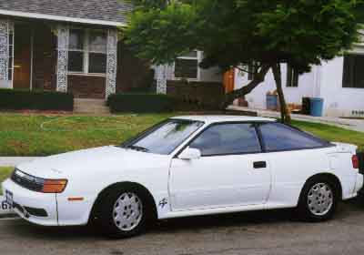

ENGINE
Metal Head Gasket, HKS
87.5 x 0.6mm 2301-RT033
87.5 x 1.0mm 2301-RT034
87.5 x 1.6mm 2301-RT035
Metal Head Gasket, Trust
89 x 1.0mm 421175
89 x 1.5mm 421176
89 x 2.0mm 421177
HKS COMPLETE PERFORMANCE UPGRADE
Stock HP 190
Stage 1 - Exhaust System 204hp (8psi)
Stage 2 - K & N Air Filter
Twin Power Ignition 209hp (8.5psi)
Stage 3 - Electronic Variable Controller IV 223hp (9.5psi)
Stage 4 - Programmed Fuel Computer (F-CON) 249hp (15psi)
GREDDY PERFORMANCE UPGRADE
Profec Electronic Boost Control
Profec B Electronic Boost Control
Speed Cut Controller
Boost Controller ( TVVC )
Rebic III ( fuel management )
Rebic III Simulator
GAUGES
Boost Gauge, 60mm, HKS
Boost Gauge, 60mm, GReddy
Exhaust Temperature Gauge, 60mm, HKS
Exhaust Temperature Gauge, 60mm, GReddy
TURBO TIMER
HKS
Greddy
DRIVETRAIN
Centerforce I
Centerforce Dual Friction
BRAKE COMPONENTS
Cross Drilled Rotors
Steel Braided Brakeline, set
SUSPENSION
KYB Gas Shocks, front only, 2pcs.
For any inquiries, please call 213-755-1177 or email us.